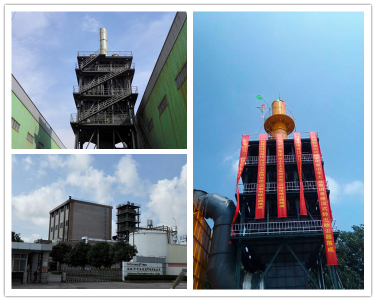
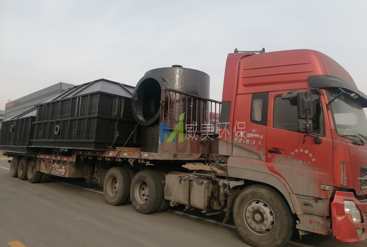
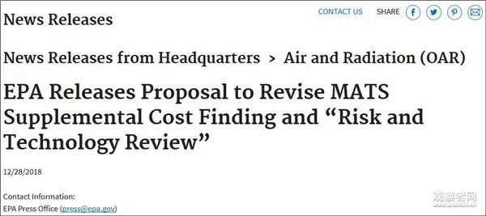
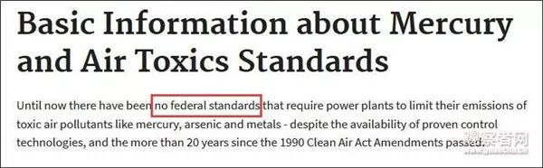
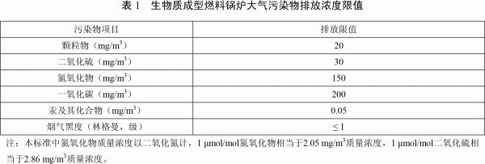
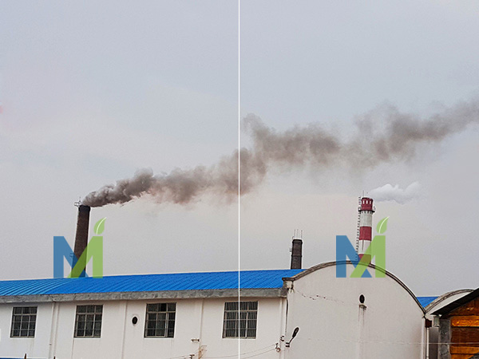
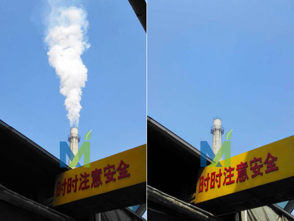
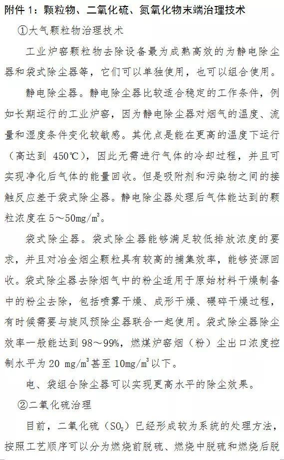
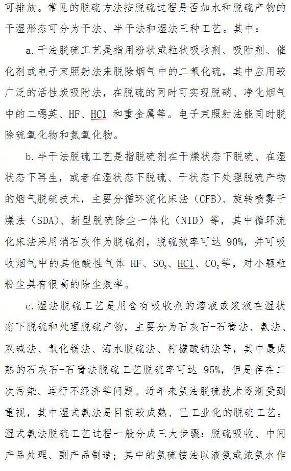

江西华邦复合材料有限公司专业从事电除雾器、湿式电除尘器及阳极管等除尘设备的研发生产
 13870005775
1387000577513870005775
邮箱：jiangxihb@163.com锌焙砂及氯化锌烟气湿式静电除雾器发货内蒙，下图为发货现场
两套湿式静电除雾器其中一套针对为锌焙砂烟气进行深度净化，烟气量50000m3/h，设计气速为1m/s，设计除尘效率为90%以上。另一套湿式电除尘（雾）器针对为氯化锌蒸发烟气进行深度净化，烟气量36000m3/h，设计基础0.9m/s，设计除尘效率为90%以上。我司负责两套电除雾设备本体(包括高压电源控制柜至本体以内的电气、电缆)的制作、运输、安装及调试，后续将跟进湿电设备的的安装及调试进展情况。

该套湿式静电除雾器针对为锌焙砂烟气进行深度净化
该套湿式电除尘（雾）器针对氯化锌蒸发烟气进行深度净化

左上为江西华邦锌焙砂烟气冶理案例
江西华邦复合材料有限公司研发的湿式静电除雾器是一种用来处理含微量粉尘和微颗粒的高效节能的烟气净化设备，主要用来去除含湿气体中的尘、酸雾、水滴、气溶胶、臭味、PM2.5等有有害物质，具有收尘效率高，处理烟气量大，使用寿命长，维护费用低等优点，是治理大气粉尘污染的理想设备，在当前国内外对环保要求越来越高的情况下得到了广泛的应用。

近日，山西省生态环境厅印发了关于修订《山西省城市环境空气质量改善奖惩方案》的通知，通知规定PM 2.5 、PM 10 、二氧化硫浓度与考核基数相比，差值在 5 个微克以内（含）时，扣罚资金系数为 10 万元/微克，在 5 个微克以上时，扣罚资金系数为 20 万元/微克，全文如下。
▲ 来源：山西省生态环境厅
近日，山西省生态环境厅印发了关于修订《山西省城市环境空气质量改善奖惩方案》的通知，全文如下：
山西省生态环境厅
关于修订《山西省城市环境空气质量改善奖惩方案》的通知
各市生态环境局、财政局：
《山西省城市环境空气质量改善奖惩方案（试行）》从 2017年 10 月份实施以来，有效激发了地方政府大气污染防治积极性，有力推动了全省环境空气质量持续改善。为进一步完善环境空气质量改善奖惩机制，省生态环境厅、财政厅结合工作实际，对《山西省城市环境空气质量改善奖惩方案（试行）》进行了修订。现印发给你们，请认真贯彻落实。原《山西省城市空气质量改善奖惩方案（试行）》同时废止。
山西省生态环境厅 山西省财政厅
2019 年 1 月 24 日
附件：
山西省城市环境空气质量改善奖惩方案
为适应当前环境空气质量改善的形势，更好激励各市空气质量改善，科学合理实施空气质量奖惩，现对《山西省城市环境空气质量改善奖惩方案（试行）》进行修订，修订后方案如下。
一、考核对象
本方案适用于各设区市城市环境空气质量奖惩考核。各设区市可参照本方案对所辖县市区（包括财政体制政策试点县（市））环境空气质量改善情况进行奖惩考核。
二、考核指标
（一）采暖期（1 月、2 月、3 月、11 月、12 月）
环境空气质量奖惩考核因子为环境空气质量综合指数（以下简称“综合指数”）、PM2.5 、二氧化硫，其中 PM2.5 、二氧化硫浓度以微克/立方米计。
( 二）非采暖期（4 月 — 10 月）
环境空气质量奖惩考核因子为综合指数、PM2.5 、PM10 ，其中PM2.5 、PM10 浓度以微克/立方米计。
三、考核基数
综合指数、PM2.5 、PM 0 、二氧化硫浓度考核基数为当月全省平均值和考核城市去年同期值。
四、考核方法
首先对当月监测结果差于考核基数的，按照下列方法进行资金扣罚。根据单项扣罚资金总额，对当月监测结果好于考核基数的，给予资金奖补。
（一）资金扣罚
1.资金扣罚对象为当月指标监测结果同比恶化或高于全省平均值的城市。
2. 综合指数与考核基数相比，差值在 1 个数值（含）以内时，扣罚资金资金系数为 200 万元/个数值，超过 1 个数值时，扣罚资金系数为 400 万元/个数值。PM 2.5 、PM 10 、二氧化硫浓度与考核基数相比，差值在 5 个微克以内（含）时，扣罚资金系数为 10 万元/微克，在 5 个微克以上时，扣罚资金系数为 20 万元/微克。
3.单项指标扣罚资金=高于全省平均值的扣罚资金+同比恶化扣罚资金。高于全省平均值的扣罚资金=0.5×[（考核城市当月环境空气质量指标值-全省当月环境空气质量指标平均值）×扣罚资金系数]。同比恶化的扣罚资金=1.2×[（考核城市当月环境空气质量指标值-考核城市上年同期环境空气质量指标值）×扣罚资金系数]。
4.当月城市 PM 2.5 或 PM 10 达到国家《环境空气质量标准》二级标准的，以及二氧化硫浓度低于 30 微克/立方米（含）的，不进行扣罚。
（二）资金奖励
1.资金奖励对象为当月监测结果同比改善或优于全省平均值的城市。
2.当月全省单项指标奖励资金总额为扣罚资金总额的 80%。
3.单项指标奖励资金=同比改善奖励资金+优于全省平均值的奖励资金。同比改善奖励资金=80%×当月全省单项指标奖励资金总额×[考核城市当月指标同比下降值/全省同比改善城市当月指标同比下降值之和]。优于全省平均值的奖励资金=20%×当月全省单项指标奖励资金总额×[（全省平均值-考核城市当月指标值）/优于全省平均值的城市当月指标值与全省平均值差值之和]。
（三）其他
考核城市各单项指标环境空气质量奖励和扣罚资金相抵即为该城市当月环境空气质量奖惩资金。
五、数据来源
考核数据采用山西省环境监测中心站提供的各设区市环境空气质量自动监测数据。发现数据弄虚作假行为的，将按照有国家有关规定严肃处理。
六、考核组织
省生态环境厅负责每月对各市环境空气质量改善奖惩结果进行核算，将结果通报各市人民政府并在媒体公布。年终，各设区市将所辖财政体制政策试点县（市）环境空气质量改善奖惩情况报省生态环境厅。省财政厅依据省生态环境厅出具的奖惩结果汇总情况报告(财政体制政策试点县（市）要单列)，对各设区市和财政体制政策试点县（市）扣缴与奖励资金统一进行结算。
七、资金管理
（一）环境空气质量扣罚资金的 80%用于对各市空气质量奖励，20%由省级统筹使用。
（二）环境空气质量奖励及扣罚结余资金按照大气污染防治专项资金管理办法，统筹用于改善环境空气质量方面的项目，包括大气污染防治重点项目、环境空气质量监测和监管基础能力建设、相关科学研究等。省财政厅、省生态环境厅对资金使用进行监督管理。
八、其他
本方案印发之日起实施。原《山西省城市空气质量改善奖惩方案（试行）》同时废止。

▲ 来源:北京日报 作者：高健
最高法院、最高检察院、公安部、司法部、生态环境部近日联合发布《关于办理环境污染刑事案件有关问题座谈会纪要》（以下简称《纪要》），《纪要》加大对环境污染犯罪的惩治力度，提出重污染天气排污可追刑责。
打击单位犯罪
《纪要》提出，办理环境污染犯罪案件，认定单位犯罪时，应当依法合理把握追究刑事责任的范围，贯彻宽严相济刑事政策，重点打击出资者、经营者和主要获利者，既要防止不当缩小追究刑事责任的人员范围，又要防止打击面过大。
为了单位利益，实施环境污染行为，并具有经单位决策机构按照决策程序决定的；经单位实际控制人、主要负责人或者授权的分管负责人决定、同意的；单位实际控制人、主要负责人或者授权的分管负责人得知单位成员个人实施环境污染犯罪行为，并未加以制止或者及时采取措施，而是予以追认、纵容或者默许的；使用单位营业执照、合同书、公章、印鉴等对外开展活动，并调用单位车辆、船舶、生产设备、原辅材料等实施环境污染犯罪行为等情形之一的，应当认定为单位犯罪。
篡改伪造数据排污构成犯罪故意
主观过错，也是判定犯罪的一项重要标准。《纪要》指出，判断犯罪嫌疑人、被告人是否具有环境污染犯罪的故意，应当依据犯罪嫌疑人、被告人的任职情况、职业经历、专业背景、培训经历、本人因同类行为受到行政处罚或者刑事责任追究情况以及污染物种类、污染方式、资金流向等证据，结合其供述，进行综合分析判断。
《纪要》还以列举形式，说明主观故意情形。
具有下列情形之一，犯罪嫌疑人、被告人不能作出合理解释的，可以认定其故意实施环境污染犯罪，但有证据证明确系不知情的除外：企业没有依法通过环境影响评价，或者未依法取得排污许可证，排放污染物，或者已经通过环境影响评价并且防治污染设施验收合格后，擅自更改工艺流程、原辅材料，导致产生新的污染物质的；不使用验收合格的防治污染设施或者不按规范要求使用的；防治污染设施发生故障，发现后不及时排除，继续生产放任污染物排放的；生态环境部门责令限制生产、停产整治或者予以行政处罚后，继续生产放任污染物排放的；将危险废物委托第三方处置，没有尽到查验经营许可的义务，或者委托处置费用明显低于市场价格或者处置成本的；通过暗管、渗井、渗坑、裂隙、溶洞、灌注等逃避监管的方式排放污染物的；通过篡改、伪造监测数据的方式排放污染物的；其他足以认定的情形。
严重排污可按投放危险物质罪定罪量刑
《纪要》提出，对于行为人明知其排放、倾倒、处置的污染物含有毒害性、放射性、传染病病原体等危险物质，仍实施环境污染行为放任其危害公共安全，造成重大人员伤亡、重大公私财产损失等严重后果，以污染环境罪论处明显不足以罚当其罪的，可以按投放危险物质罪定罪量刑。
《纪要》提出，司法实践中打击涉大气污染环境犯罪，要抓住关键问题，紧盯薄弱环节，突出打击重点。对重污染天气预警期间，违反国家规定，超标排放二氧化硫、氮氧化物，受过行政处罚后又实施上述行为或者具有其他严重情节的，可以适用相关司法解释规定的“其他严重污染环境的情形”追究刑事责任。
对名为运输、贮存、利用，实为排放、倾倒、处置污染物的行为应当认定为非法排放、倾倒、处置行为，可以依法追究刑事责任。
长江经济带环境污染犯罪可从重处罚
《纪要》提出，要坚决贯彻党中央推动长江经济带发展的重大决策，为长江经济带共抓大保护、不搞大开发提供有力的司法保障。实践中，对于发生在长江经济带十一省（直辖市）的跨省（直辖市）排放、倾倒、处置有放射性的废物、含传染病病原体的废物、有毒物质或者其他有害物质的；向国家确定的重要江河、湖泊或者其他跨省（直辖市）江河、湖泊排放、倾倒、处置有放射性的废物、含传染病病原体的废物、有毒物质或者其他有害物质的，可以从重处罚。
近日，江西华邦复合材料有限公司中标湖北吉星化工集团有限责任公司2万吨/年次磷酸钠技改项目湿式静电除雾器项目，以下网站公布的中标结果：
江西华邦复合材料有限公司中标湖北吉星化工集团有限责任公司2万吨/年次磷酸钠湿式静电除雾器技改项目
此次发货的湿电是为江西一家集化肥、化工于一体的综合性化工企业定制。该套湿式电除尘器应用于该公司2万吨氰尿酸项目。江西华邦负责高压静电除雾器的本体及其辅助设备系统的功能设计、制造、供货、安装及调试，该设备烟气量25000m3/h，烟气温度 ≤60℃ ，设计流速0.5m/s。
以下是氰尿酸烟气深度净化高压静电湿式电除尘器发货现场图，
氰尿酸烟气深度净化高压静电湿式除尘器阳极发货

烟气深度净化高压静电湿式除尘器壳体及配件发货

特朗普政府27日宣布将放宽该国火力发电厂有毒气体（含汞等）的排放标准，原因是太贵了。
根据美国国家环境保护局（EPA）网站给出的公示，他们是这么算的：
若要让美国国内所有的火力发电厂遵循目前的排放标准，每年成本预计在74亿美元至96亿美元之间，而带来的经济收益（主要指公共卫生领域的节余）每年仅有400万美元至600万美元。

EPA继而认定，通过2011年制定的有害气体排放标准来管控发电厂的做法，是“不准确且不必要的”。
这条公示内容暂未进入美国立法进程，届时美国公民将有60天的时间对此提出意见。
美国乔治亚州的一家燃煤电厂 资料图
美国于 2003 年提出一项名为“清洁天空计划”法案，计划到 2018 年，将汞排放减69%，至15吨/年。2005年3月美国环保署推出了《洁净空气汞法》(CAMR)，首次规定了该国火电厂的汞排放，这也是世界上第一个规定汞排放的法规。
而据国内学术期刊《基层建设》2010年的数据，在美国，燃煤电厂已成为汞的最大排放源，每年要向大气输送48吨汞，占到全美国汞排放量的40% 以上。
到了2011年，EPA公布“汞及有毒气体（排放）标准（简称MATS）”，被《纽约时报》誉为是时任美国总统奥巴马的“标志性环保成就”。当时奥巴马执政时期，EPA又有另一种算法：
发电厂如果遵循排放标准，每年成本预计在96亿美元左右。但反之，美国每年将在公共卫生领域多支出370亿美元至900亿美元。奥巴马政府认为，这项排放标准每年可以防止4700起心脏病、13万起哮喘、以及1.1万起婴儿早逝的发生。
不过在2015年，美国最高法院以5:4的决议，驳回了这条2011年制定的排放标准，因为他们觉得奥巴马的算法有误。时任大法官斯卡利亚（Antonin Scalia）指出：“为了在卫生和环保领域省下几美元（few dollars），而造成数十亿美元的损失，这种做法非但‘不准确’，甚至有点不合理。”

9名法官进行表决，最终结果5:4，同意驳回
EPA如今重新算账，获得不少利益集团的赞赏。27日，美国国家矿业协会主席哈尔•昆（Hal Quinn）发表声明，批评奥巴马时期制定的排放标准“可能是针对美国消费者最大的一次审计诈骗。”
即便如此，还是有包括《华盛顿邮报》在内的美国媒体，认为特朗普又一次对奥巴马“政治遗产”展开了攻击。从上任出去退出《巴黎气候协定》开始，有关特朗普“环保意识淡薄”的批评不绝于耳。截至目前，就大气污染治理领域，特朗普政府已对9项相关条例进行了废除、重审、暂缓等操作。
而据哈佛大学法学院、哥伦比亚法学院跟踪预测，特朗普政府还计划废除21项大气污染有关法规。而就整个环保领域相关条例，特朗普至多会废除78项。

10月底还传出美国富士康工厂“获准将废料排放到湿地”的新闻，作为特朗普的支持者、威斯康辛州前共和党籍州长沃克（Scott Walker）被指违反环境相关法律。
《基层建设》指出，我国先后 4 次颁布实施有关燃煤电厂大气污染物的排放标准，标准中均没有设置汞的排放限值。在2015年开始实施的《火电厂大气污染物排放标准》(GB 13223 -2011)中增加了汞的排放指标：汞及其化合物排放浓度限为0.03mg/m³。
另据科学网消息，今年11月21日，第五届中国煤炭消费总量控制和能源转型国际研讨会在北京召开，会上分享了《“十三五”中期评估与后期展望研究报告（初稿）》，并明确指出，后两年的大气污染治理中，将增加汞和空气中氨氮总量控制指标，加大监管和督查，加大对煤炭消费的约束和压力。

我国已有针对汞的细节排放标准，虽然美国有大体的减排目标，但EPA在其官网上写道：目前美国的发电厂对于汞还没有一个统一的排放标准。
值得一提，曾有美媒在去年5月指出：与美国对中国在气候变化领域习以为常的看法不同，中国采取了多项且激进的措施对煤电领域进行整顿。中国不是美国，没有大量的天然气储备。煤电利用不可避免，所以中国在清洁煤电技术上投入巨资。
文章最后总结道，美国值得向中国学习，在电力领域逐步减少空气污染排放。
德国、日本等国形成了防治大气污染多举并进的经验。
德国
20世纪中期，德国的鲁尔工业区曾出现过严重的空气污染状况。德国主要通过立法制定排放标准、完善长效机制和应急举措、加强民众环保宣传教育等来防治大气污染，取得了较好的成效。

01
立法制定排放标准，推动环保技术创新
1974年，德国出台了《联邦污染防治法》，主要对大型的工业企业进行约束，制定排放标准，要求现有企业在规定时间内更新过滤装置，达到更高的排放标准。新成立企业在申请时就必须严格遵守法律规定。时至今日，该部法律经过多次修改和补充，已成为德国最重要的法律之一，这项法律后来成为欧盟范围内的典范。《联邦污染防治法》也成为环保技术创新的推动力。德国的中小企业由此研发和创造了许多新的环保技术。2007-2010年，德国绿色经济产业平均每年增长12％。2011年，德国在环保和能效领域的市场达到3000亿欧元。自2005年1月1日起，德国实行统一的欧盟排放标准。这一标准对各种有害气体都有严格规定，如每小时SO2值不得超过350μg／m３。这一标准值一年中不得超过24次。
02
设立“环保区域”，提倡绿色出行
目前，德国超过40个城市设立了“环保区域”，各地区都制定自己的空气质量计划，不符合排放标准的汽车不允许驶入环保区。同时，德国还提倡绿色出行。作为世界最主要的汽车生产国之一，德国许多公司80%的员工每天都乘公共交通或骑自行车上班，减少私人汽车出行在德国国民当中已经成为一种时尚。
03
建立长效机制，快速应对严重污染
为减少雾霾天气，德国还采取一些长效机制提高空气质量：①对所有机动车设定排放标准。如对小汽车、轻型或重型卡车、大巴、摩托车等各类车辆都设定排放上限；②严格大型锅炉和工业设施排放标准；③规定机械设备排放标准。如果空气出现严重污染，立即采取行动快速应对：①对部分车辆实施禁行，或者在污染严重区域禁止所有车辆行驶；②限制或关停大型锅炉和工业设备；③限制城市内建筑工地施工。此外，还禁止燃烧木头、焚烧垃圾等行为。
04
提升环保意识，促进人与自然和谐发展
德国注重加强民众环保宣传、教育和提高全民环保意识。例如，在交通领域，车辆应安装颗粒过滤装置；在工业领域，工厂自觉减少排污；在农业领域，农户发展生态农业，优化饲养种植方法。具体到个人，则建议民众长途出行时选择乘坐公共交通工具，短途出行时则选择骑车或步行；私家车尽量选择排量小、污染小的车辆；居民生活多使用节能家电，并尽可能使用可再生能源。
日本
日本在六七十年代曾经只顾发展经济忽略了生态环境保护，付出了巨大的代价，曾经饱受污染之苦。该国的大气污染防治是典型的先污染后治理案例，并取得焕然一新的成效。日本治理大气污染的主要措施如下。
01
推进立法严格管制，依法治理大气污染
伴随着经济高速发展带来的环境污染，日本开始出台全国性的环境立法，20世纪60年代中期，日本政府先后颁布了《公害对策基本法》《排烟规制法》《噪声规制法》《大气污染防治法》等，构建具备较强规划性和可操作性的法律，并明确国家、地方政府、企业以及公众责任和义务。2000年日本修订《关于确保公民健康和安全的环境条例》，明确规定了出现严重空气污染时应该采取的紧急措施，规定使用符合标准的燃料，减少煤烟、粉尘和有害气体的排放。
日本出台了许多相关法律，确立了一系列极其重要的法律原则，并严格执行。如“预测污染物对居民健康的危害是企业必须高度重视和履行的义务，忽视这些义务等同于过失”，“只要污染危害超限的既成事实成立，即使无过失，也要承担赔偿责任”等。

此外，日本还通过公害诉讼，建立起一套独具特色的救济、补偿制度。比如，日本《救济公害健康受害者特别措施法》规定，需对因大气污染引起的支气管哮喘、慢性支气管炎等患者的医疗费实施补偿，在需由个人支付的部分中，相关的事务费由国家和地方自治体负担，而医疗费、医疗津贴、护理津贴由企业界负担一半，另一半由国家和地方自治体负担。另外，日本的公害健康损害补偿等相关法律规定，在大气污染危害的“第一类指定区域”，即因受严重大气污染影响而导致疾病多发区域，“损害补偿费”（含疗养费、身体障碍补偿费、家属补偿费、儿童补偿费、葬祭费等）通过“课征金体制”根据硫氧化物排放量征收相应的“污染负荷量课征金”。正因为日本对污染企业和污染源采取了严格的惩罚制度，使得企业数十年来不断在开发“绿色”能源上下功夫，从源头上掐断了污染源的形成。
02
加大城市立体绿化，重点整治汽车尾气
日本东京都政府规定，新建大楼必须有绿地，楼顶必须绿化。东京的绿化很少种草，而是种树，不但要绿化面积，还追求绿化体积。大量树木对城市空气的净化作用是不可忽视的。另一个重要手段是重点整治机动车尾气。日本环境厅规定了机动车在行驶过程中产生和排入大气的废气的最高量，禁止超标车辆投入运行。日本的都道府县还在交叉路口等交通量大的地点设置了废气浓度测试点，发现该点废气浓度超标，站点工作人员可以向都道府县公安委员会提出采取限制交通的请求。日本还于1992年制定了控制汽车尾气排放的专项法律《关于机动车排放氮氧化物的特定地域总量削减等特别措置法》，并在2001年追加颗粒状物质为法律的控制物质，制定了全新的《关于机动车排放氮氧化物以及颗粒物质的特定地域总量削减等特别措置法》。
11月，生态环境部印发《长三角地区2018-2019年秋冬季大气污染综合治理攻坚行动方案》。《福建省重点工业行业VOCs治理推荐措施与技术》印发。四川、福建、黑龙江等地区发布了打赢蓝天保卫战三年行动计划。
蓝天保卫战
四川省重污染天气应急指挥部办公室印发《四川省2018—2019年秋冬季蓝天保卫战攻坚行动方案》。根据方案，今年秋冬季四川省将成都平原、川南、川东北地区为重点区域，坚持问题导向，强化结构调整、工程治理、联防联控和重污染天气应对，严格执法监管，强化督查问责，减少持续污染天数，减轻重污染天气影响，推动大气环境质量持续改善，完成全省未达标城市细颗粒物(PM2.5)浓度下降12%、优良天数率达到82.6%的2018年度目标任务。
福建省人民政府印发《福建省打赢蓝天保卫战三年行动计划实施方案》，到2020年，全省环境空气质量持续改善，保持优良水平，继续保持位居全国前列，全省设区城市空气质量优良天数比例达到国家考核要求，6项污染物指标优于国家标准，PM10、PM2.5浓度进一步下降，PM2.5浓度力争降到25微克／立方米，臭氧浓度升高趋势得到有效遏制；全省二氧化硫、氮氧化物重点工程减排量分别达到3.5万吨、4.6万吨，挥发性有机物（VOCs）排放总量较2015年下降10%以上。
黑龙江省人民政府印发了《黑龙江省打赢蓝天保卫战三年行动计划》，《计划》要求，到2020年，全省PM2.5未达标地级及以上城市浓度比2015年下降15%以上，地级及以上城市空气质量优良天数比率达到88%，哈尔滨市PM2.5年均浓度比2015年下降25%以上，空气质量优良天数比率达到80%以上。齐齐哈尔市、牡丹江市等接近国家空气质量二级标准的城市实现达标;佳木斯市、大庆市、鸡西市、双鸭山市、鹤岗市、绥化市基本保持达到国家空气质量二级标准。
大气污染治理
生态环境部印发《长三角地区2018-2019年秋冬季大气污染综合治理攻坚行动方案》。全面完成2018年空气质量改善目标；秋冬季期间（2018年10月1日至2019年3月31日），长三角地区PM2.5平均浓度同比下降3%左右，重度及以上污染天数同比减少3%左右。
广西壮族自治区人民政府办公厅发布《关于印发广西大气污染防治攻坚三年作战方案(2018—2020年)》的通知，到2020年，细颗粒物(PM2.5)未达标的12个设区市(已达标的北海市、防城港市继续巩固提升)浓度比2015年下降15%;设区市空气质量优良天数比率达到91.5%;二氧化硫、氮氧化物排放量比2015年减少13%。
山西省人民政府办公厅印发《关于开展2018—2019年秋冬季大气污染综合治理攻坚行动促进空气质量进一步改善的通知》，要求各市严格落实主体责任。各市人民政府是本地实施大气污染防治工作的责任主体，市长为第一责任人，对于产业结构优化调整、重污染企业退城搬迁、清洁取暖和散煤替代、柴油货车污染治理等重点任务，各市市长要直接负责。
内蒙古自治区人民政府网站正式发布《内蒙古自治区人民政府办公厅关于印发2018年度大气污染防治实施方案的通知》，对内蒙古的大气污染防治工作进行规划。
山东省印发了《山东省落实〈京津冀及周边地区2018—2019年秋冬季大气污染综合治理攻坚行动方案〉实施细则》，《细则》提出，加大钢铁、焦化、火电等行业产能淘汰和压减力度，列入去产能的钢铁企业，一并退出配套的烧结、焦炉、高炉等设备。
为贯彻落实国家秋冬季攻坚行动要求，北京市印发实施了“北京市秋冬季攻坚细化分解方案”，坚持“精治、法治、共治”、“落细、落小、落实”的原则，确定了秋冬季(2018年10月—2019年3月)北京市及各区空气质量持续改善的目标，并细化提出了10大类、29项攻坚措施。一是标本兼治，治本为主；二是聚焦问题、重点突出；三是强化应急、削峰降速；四是细化分工、落实责任。
《福建省大气污染防治条例》经省人大常委会会议表决通过，将于明年1月1日起施行。条例强化源头防控，实行大气污染联防联控，对于公众关注的突发环境事件，完善了应急处置机制。
11月28日，《青海省大气污染防治条例》经省十三届人大会常委会第七次会议审议通过，将于2019年2月1日起施行。
《湖北省大气污染防治条例》已由湖北省第十三届人民代表大会常务委员会第六次会议于2018年11月19日修订通过，现将修订后的《湖北省大气污染防治条例》公布，自2019年6月1日起施行。
广西自治区十三届人大常委会第六次会议，表决通过《广西壮族自治区大气污染防治条例》。《条例》对大气污染防治法等上位法进行了细化，并结合广西实际补充了相关规定严控大气污染。《条例》将于2019年1月1日起施行。
29日，云南省十三届人大常委会第七次会议表决通过了《云南省大气污染防治条例》，该条例将于2019年1月1日起实施。《条例》明确，禁止在居民住宅楼、未配套设立专用烟道的商住综合楼新建、改建、扩建产生油烟、异味、废气的餐饮服务项目。县级以上政府可划定禁止露天烧烤的区域。
VOCs治理
《福建省重点工业行业VOCs治理推荐措施与技术》印发。适合炼油与石化、化工、表面涂装、包装印刷等行业。
扬尘治理
北京印发《北京市打赢蓝天保卫战三年行动计划2018年重点任务措施和2018-2019年秋冬季住建系统施工现场扬尘治理攻坚行动方案》，确保完成2018-2019年秋冬季扬尘治理各项目标任务。
技术规范
生态环境部印发《固定污染源废气一氧化碳的测定 定电位电解法》（HJ973-2018）。本标准规定了测定固定污染源废气中一氧化碳的定电位电解法。本标准中的浓度泛指质量浓度或体积分数。本标准的附录A为资料性附录。本标准为首次发布。
上海市技术质量监督局正式颁布了《环境空气非甲烷总烃在线监测技术规范》（DB 31/T 1090-2018）。规定了环境空气、厂界、以及工业区边界的非甲烷总烃在线监测方法——直接法和差减法两类，规范了非甲烷总烃在线监测技术，显著提高了各FID检测器一致性。
上海市技术质量监督局正式颁布了《环境空气有机硫在线监测技术规范》（DB 31/T 1089-2018）。规定了环境空气、厂界、以及工业区边界的甲硫醇、乙硫醇、甲硫醚、二硫化碳、乙硫醚、二甲二硫醚等6种有机硫物质在线监测方法。
2018年11月12日，浙江省质量技术监督局批准发布了DB33/T 2167-2018《燃煤电厂固定污染源废气低浓度排放监测技术规范》省级地方标准。采用燃油、燃气、煤矸石、生物质、油页岩、石油焦、生活垃圾、危险废物等燃料的固定污染源废气相应污染物低浓度排放监测可参照执行。
来源：中国大气网 作者：李丹
伴随着秋冬供暖季的到来，对于大气环境治理工作而言是一个大的挑战，而锅炉治理是大气污染治理的重要方面，是改善环境质量的重大民生工程。生物质锅炉以成型的生物质颗粒为燃料，是一种具有压力容器资质的锅炉，生物质锅炉直接燃用生物质燃料（树木、秸秆、锯末、稻壳、蔗渣等）的锅炉，它所使用的燃烧设备其排放物燃烧产生的灰份约占燃料的1.5%左右，相比传统燃煤方式来说，其污染排放量的降低度可以说是有几倍之高。与此同时，其燃烧所用的材料也为可降解的木料、玉米杆、麦秸秆等天然物质，不仅能够防止直接就地燃烧所造成的土地破坏，最大限度的能够使其资源利用的恰到好处。另外，为了方便排灰，生物质锅炉的后部一般都布置有螺旋出渣机，可以实现连续清灰的工作。
天津生物质成型燃料锅炉大气污染物排放浓度限值

江西华邦生物质锅炉超低排放案例

使用湿式静电除尘器实现糖厂生物质锅炉超低排放效果

第二台使用湿式静电除尘器实现糖厂生物质锅炉超低排放效果
35t+45t糖厂锅炉烟气湿式静电除尘器投入使用，烟气量分别为11万气量和14万气量，进气方式来下进上出，以下是来自现场的效果图

糖厂锅炉烟气湿式电除尘器使用效果图





Copyright © 江西华邦复合材料有限公司 All Rights Reserved 冀ICP备18007757号-2
江西华邦复合材料有限公司专业从事电除雾器、湿式电除尘器及阳极管等除尘设备的研发生产
地址：江西省贵溪市工业园区 销售电话：13870005775 周智文，13907038182 沈伟